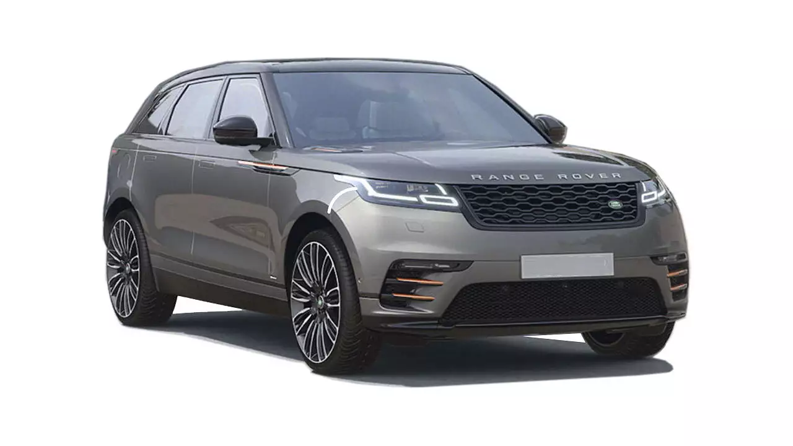
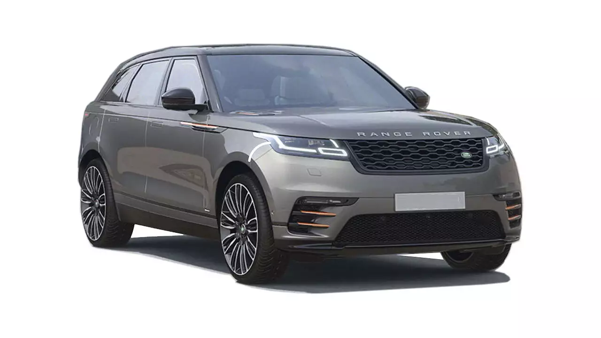

The Range Rover
The Range Rover is a 4x4 luxury SUV produced by Land Rover, a marque and sub-brand of Jaguar Land Rover.
The Range Rover line was launched in 1970 by British Leyland and is now in its fifth generation.
Additional models have been launched under the Range Rover name, including the Range Rover Sport, Range Rover Evoque, and Range Rover Velar.
History
The Rover Company (originator of the Land Rover marque) was experimenting with a larger model than the Land Rover Series in 1951, when the Rover P4-based two-wheel-drive "Road Rover" project was developed by Gordon Bashford.
This was shelved in 1958 and the idea lay dormant until 1966, when engineers Spen King and Bashford set to work on a new model
The first Range Rover prototype was built in 1967 with plate number SYE 157F
- a "clamshell" bonnet, 22 inch alloys, a 289 km/h (180 mph) top speed, 4WD and a 2,500 kg (5,512 lb) weight.
- The Range Rover Sport was comparably of much more conservative design featuring five doors and a wheelbase hardly shorter than that of the Range Rover Vogue.
- This allegedly gives the Range Rover Sport the refinement and structural rigidity advantages of a monocoque chassis with the robustness of a separate chassis design for off-road applications
- It also allows for less expensive manufacturing of the vehicles due to a large number of common components.
- ervice Bulletins for most 05-09 models have 2 types of brakes listed
.jpeg) 
